КАМЕРТОН
Исторический шпионский триллер · музыкальная драма · семейная сага
Формат: 2 сезона × 12 серий × 45–55 минут
«Там, где другие слышат музыку, он читает код.»
Россия начала XX века. Князь-пианист с абсолютным слухом использует музыку как систему шифров, чтобы предотвратить международный заговор, и в ходе этой борьбы находит брата, наставника и новое понимание того, что культура может быть сильнее насилия.

Содержание
01
Логлайн, жанр, тон
02
Мир и визуальный стиль
03
Уникальная ценность / Ключевая инновация
04
Главные персонажи
05
Авторское высказывание
06
Обзор сезона 1
07
Обзор сезона 2
08
Драматургия
09
Аудитория и сравнительные аналоги
Команда и статус разработки
Бюджет и финансирование
Дистрибуция и стратегия
Потребности проекта
Правовой статус и права на проект
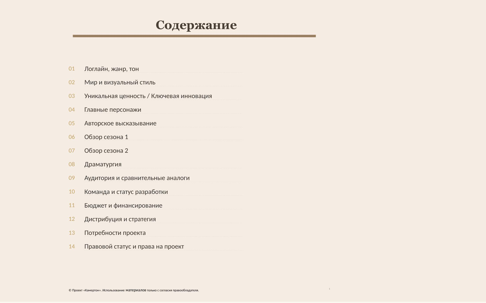
Логлайн, жанр, тон
«Камертон» — премиальный исторический сериал о мире, где дипломатия, музыка и разведка существуют в одном пространстве. Это напряжённый и элегантный шпионский триллер с сильной семейной драмой, в котором музыкальный слух становится инструментом власти, памяти и выживания.
Проект соединяет три зрительских входа: шпионскую интригу, эмоциональную семейную сагу и редкую музыкальную идентичность, которая делает его отличимым на международном рынке. Формат из двух сезонов по 12 серий отвечает тренду на более компактные премиальные драмы на международных рынках, а также укладывается в более управляемую модель для китайского регулирования и совместного производства, где исторически ориентиром был потолок в 40 серий, при рекомендации держаться ближе к 30.
Россия, 1905–1907 годы. Князь Григорий Волконский — блестящий пианист, аристократ и тайный агент — под прикрытием музыкальных вечеров и салонной жизни выходит на международный заговор, способный изменить баланс сил между Россией, Китаем и Британской империей; используя музыкальные шифры и абсолютный слух, он вступает в опасную игру, которая приводит его к утраченной любви, названному брату и семейной тайне, меняющей всю его жизнь.
Формат
2 сезона по 12 серий.
Хронометраж: 45–55 минут.
Сезон 1: 1905–1907, с флэшбэками в 1900–1901.
Сезон 2: 1911–1914.
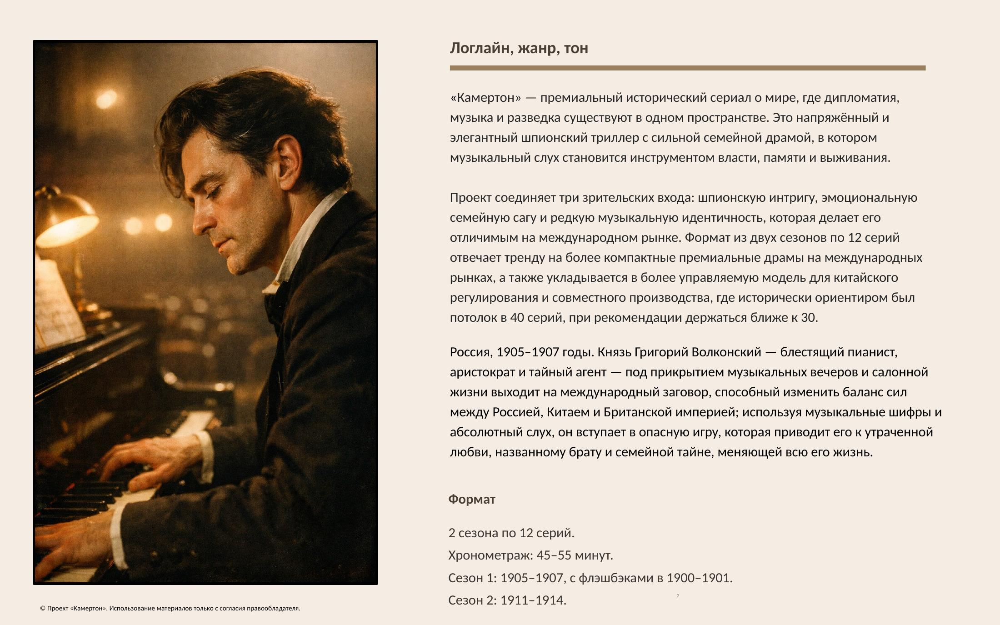
Мир и визуальный стиль
Мир сериала
«Камертон» разворачивается между Москвой, Петербургом, Шанхаем, Пекином и европейскими дипломатическими узлами начала XX века. Это мир салонов, железных дорог, консерваторий, посольств, гостиниц, закрытых переговоров и частных музыкальных вечеров, где культура не фон, а реальный инструмент влияния.
Уникальность проекта в том, что музыкальный шифр здесь не декоративный образ, а драматургический механизм, через который герой действует, распознаёт угрозу и вступает в борьбу. Такое построение мира создаёт редкое сочетание шпионажа, наследия престижной драмы и культурного триллера.
Тон и визуальный стиль
Тон сериала — напряжённый, элегантный и интеллектуальный, с атмосферой моральной двусмысленности и эмоциональной страстности, где семейная драма переплетается со шпионской интригой и музыкой. История не строится на мраке как эстетике; напротив, её визуальный язык основан на мягком «молочном» свете, воздушной среде и приглушённой тёпло-холодной палитре, которая создаёт ощущение памяти, исторической дистанции и внутреннего напряжения без ухода в тяжёлый визуальный нуар.
Камера тяготеет к крупным и средним планам, плавным движениям и интимному наблюдению за персонажами, позволяя политическому и шпионскому конфликту всегда оставаться личным. Это делает сериал одновременно доступным жанровой аудитории и привлекательным для зрителя престижной исторической драмы.
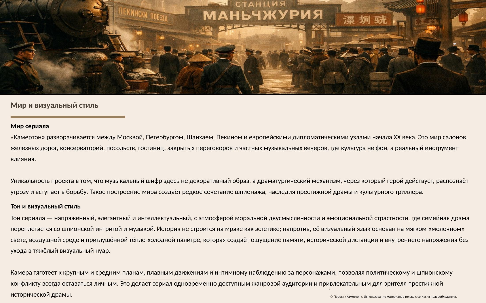
Уникальная ценность / Ключевая инновация
Что делает «Камертон» действительно отличимым:
- Шпионский триллер, в котором музыка — не украшение, а рабочая система кодирования и драматургического действия.
- история с международной географией, где Россия и Китай связаны не экзотикой, а общей драматургией.
- Главный герой — не военный и не сыщик, а музыкант с абсолютным слухом — новый тип протагониста в жанре шпионского триллера.
- Сильная семейная сага внутри жанровой конструкции: братство, предательство, кровная тайна, утрата и личная цена миссии.
- Потенциал кросс-культурного совместного производства благодаря русско-китайской оси истории и трёхъязычной среде проекта.
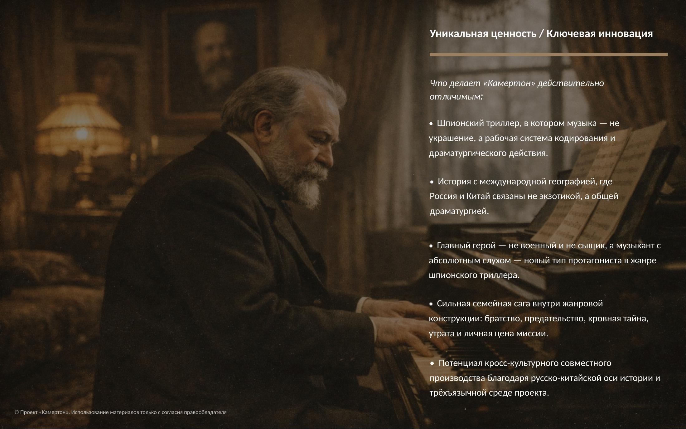
Главные персонажи
Григорий Волконский — князь, пианист, агент. Блестящий, обаятельный, дисциплинированный изнутри, но эмоционально разорванный человек, который проходит путь от личной мотивации и внутренней мести к служению более высокой идее.
Михаил Михайлович Ипполитов-Иванов — один из тех редких людей, в ком масштаб личности уживался с абсолютной простотой. Первый выборный ректор консерватории, который в годы войн и революции не уехал, а остался, чтобы сохранить русскую музыкальную школу и дать миру новое поколение музыкантов. В его салоне, где встречаются шпионы и дипломаты, искусство становится не просто фоном, а единственной правдой. Первая симфония Ипполитова-Иванова становится не только художественной кульминацией сезона, но и носителем шифра, раскрывающего британский план.
Чэнь Цзымин — философ, отшельник, соученик Григория у даосского мастера и, как позже выяснится, его единокровный брат (у них общий отец — русский князь). Он соединяет восточную интеллектуальную традицию, внутреннюю силу и политическое пробуждение. Через него история получает не экзотический, а равноправный китайский центр тяжести: он не помощник русского героя, а второй главный герой, чья боль, выбор и жертва определяют судьбу Китая и связь двух культур.
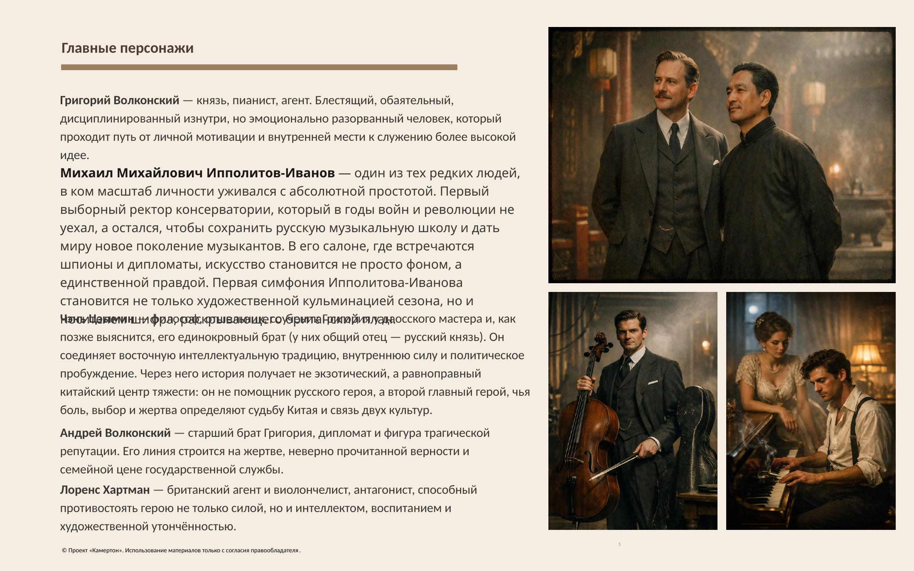
Главные персонажи (продолжение)
Андрей Волконский — старший брат Григория, дипломат и фигура трагической репутации. Его линия строится на жертве, неверно прочитанной верности и семейной цене государственной службы.
Варвара Строганова — умная, сильная и эмоционально уязвимая фигура контрразведки, чья личная привязанность и профессиональная подозрительность ставят её на опасную границу между долгом и чувством.
Лоренс Хартман — британский агент и виолончелист, антагонист, способный противостоять герою не только силой, но и интеллектом, воспитанием и художественной утончённостью.
Юки Мураками — тройная агент, шпионка-музыкант с двойным происхождением (японка и русская). Она блестяще играет на фортепиано, свободно говорит на пяти языках и виртуозно плетёт интриги, одновременно работая на Японию, Британию и Россию. Однако в конечном счёте она верна только себе и своей идее — величию Японии, которая, по её убеждению, призвана «освободить Азию от западного гнёта».
Во втором сезоне её роль трансформируется: она перестаёт быть просто лавирующей шпионкой и становится архитектором японского плана по захвату влияния в Китае. Её главная драма — искренняя вера в миссию своей страны, которая на деле оборачивается колониальной агрессией. Юки — не однозначный враг, а трагическая фигура, чья красота, интеллект и фанатизм делают её самым опасным и непредсказуемым персонажем проекта.
Женские и международные линии: помимо центральной мужской дуги, в сериале важную роль играют женские персонажи, которые не обслуживают сюжет, а меняют его ход: Варвара Строганова, Юки Мураками, Сюй Лин и другие фигуры китайской и японской линии расширяют эмоциональную, политическую и жанровую фактуру истории. Это важно для презентационного набора, потому что проект не сводится к «мужскому историческому шпионскому действию»; у него есть чувственная, стратегическая и культурная многослойность, расширяющая аудиторию.
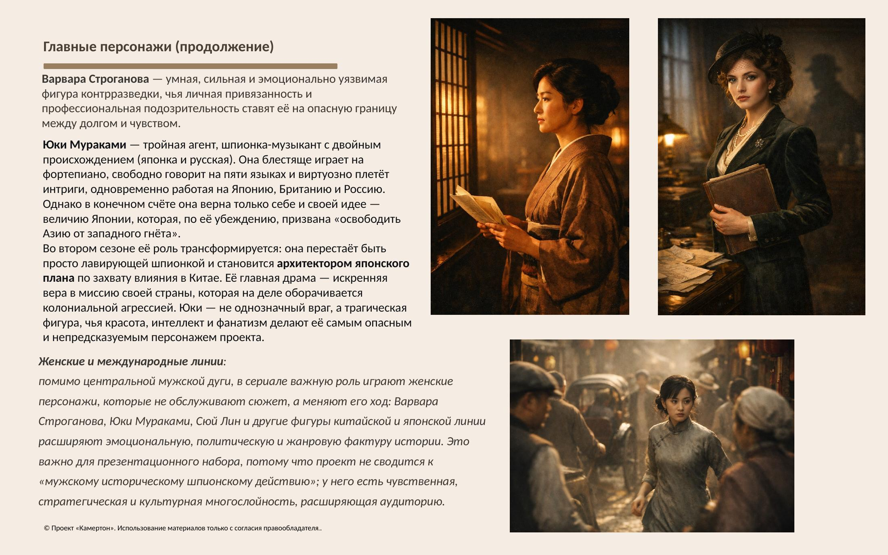
Авторское высказывание
«Камертон» — это история о том, что культура может быть не украшением власти, а альтернативой насилию. В мире, который движется к войне, главный герой борется не оружием в привычном смысле, а слухом, памятью, музыкальной структурой и человеческой связью, и именно это делает проект эмоционально отличимым.
Авторская позиция проекта не пропагандистская, а гуманистическая: показать, что между Западом и Востоком, между империей и личностью, между долгом и любовью возможен не только конфликт, но и диалог — пусть и трагически хрупкий.
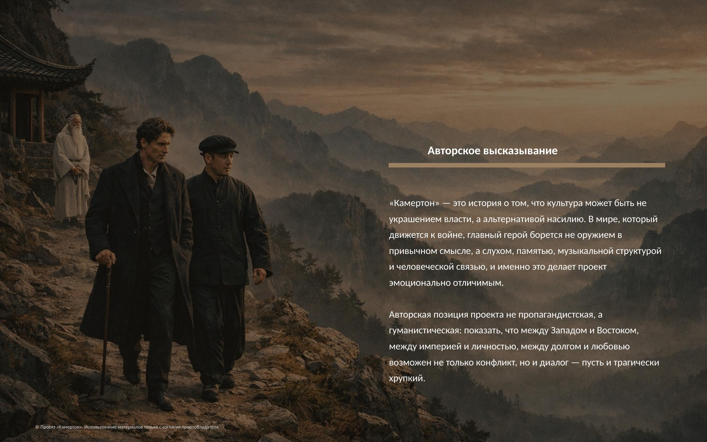
Обзор сезона 1
Сезон 1: «Русский крест» (1905–1908)
Тема сезона: рождение новой России на песке старого мира; "Первая симфония" Михаила Ипполитова-Иванова как голос надежды.
В каждом эпизоде личная линия Григория связана с конкретным историческим событием и музыкальным мотивом: от возвращения из Китая и травмы утраченной любви к Сюй Линь до формирования уникального шпионского метода — музыкального шифра, встроенного в концерты и салонную жизнь. Сезон последовательно строит мир культурной дипломатии и разведки: встречи с Ипполитовым‑Ивановым, Ли Хунчжаном, Лян Цичао и Кан Ювэем связывают российскую, китайскую и британскую линии в единую интригу, где каждая серия сочетает политический поворот, шаг в семейной драме и музыкальную кульминацию.
К середине сезона усиливается конфликт между братьями Волконскими и растёт подозрение Варвары, а британский агент‑виолончелист Лоренс Хартман становится персональным антагонистом Григория через музыкальные дуэли и зеркальную биографию.
Финал первого сезона — исполнение первой симфонии, в которой зашит код, срывающий англо‑китайский заговор: внешняя победа достигается ценой личных потерь, Андрей публично остаётся с клеймом «предателя», Варвара эмоционально разрушена, но Григорий обретает брата в лице Чэнь Цзымина и новую веру в культуру как оружие.
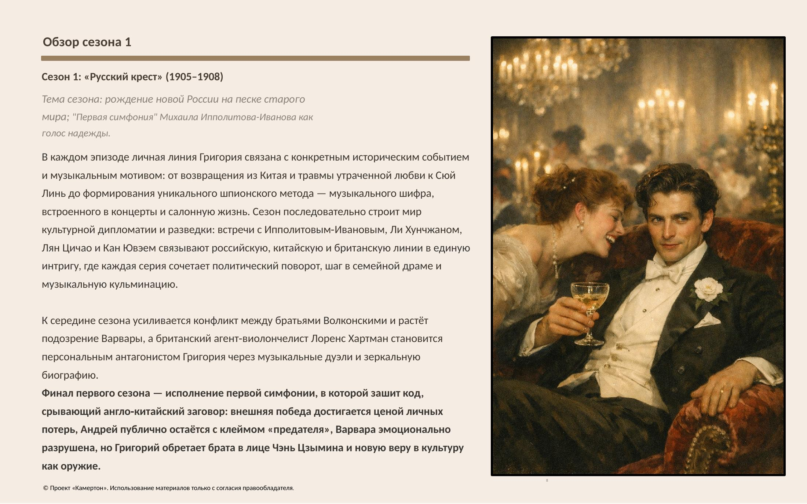
Обзор сезона 2
Сезон 2: «Танго смерти» (1911–1914)
Тема сезона: крушение империй, рождение новых идеологий; танго как форма страсти и предчувствия смерти.
Второй сезон переносит центр тяжести в Китай и международные точки напряжения: на фоне Синьхайской революции, падения империи Цин и перераздела сфер влияния между Россией и Великобританией личные истории героев становятся частью глобального политического перелома. Цзымин проходит путь от даосского отшельника к человеку, который сознательно выбирает будущий коммунистический дискурс, читая «Манифест» и революционные тексты в переводах; Григорий оказывается между долгом, любовью и виной, а Варвара и Юки вносят в историю женскую перспективу власти, желания и жертвы.
Музыка сменяет регистр: в саундтреке появляются танго, революционные песни, «Танго смерти» в исполнении Изы Кремер и траурные мотивы, в которых продолжается линия первой симфонии Михаила Ипполитова-Иванова. Сезон структурирован вокруг череды кульминаций — бал в Шанхае, музыкальный теракт, ранение и увечье Цзымина, раскрытие их кровного родства, гибель Николая, болезнь и смерть Андрея, уход Варвары со службы — которые параллельно показывают крушение частной вселенной героев и старого политического порядка.
Финал — лето 1914 года, убийство эрцгерцога и прощание Григория и Цзымина в Харбине — превращает их личную историю в пролог к мировому конфликту. Эпилог 1929 года в Шанхае, где ученик входит в класс и видит портрет Григория, закрепляет идею: от мира остались руины, но музыка и связь между людьми пережили империи.
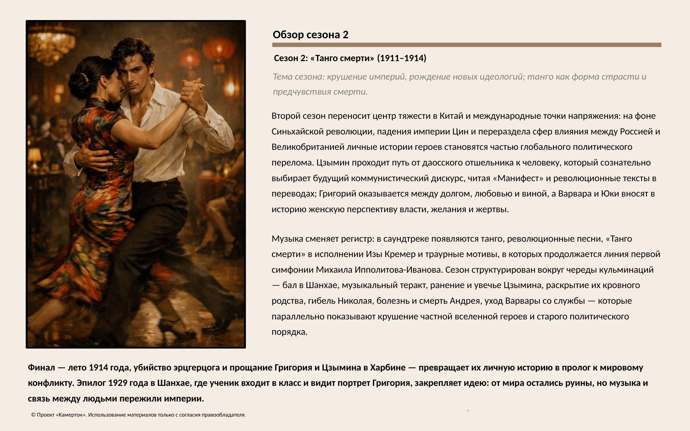
Драматургия
Каждая серия «Камертона» строится на пересечении четырёх линий: конкретного исторического события, личной развилки героев, музыкального кода и моральной дилеммы. В начале эпизода зритель получает чёткий исторический или политический контекст (революционные волнения, дипломатические переговоры, сдвиги в Китае или Европе), который запускает новое задание или угрозу для Григория и его окружения.
Дальше политический импульс всегда проходит через личное: каждый эпизод развивает хотя бы одну ключевую арку — брата против брата, Варвара между долгом и чувствами, Цзымин между философией и революцией, Лоренс между искусством и шпионажем, — и ставит героев в ситуацию выбора, за который придётся платить.
Музыка в каждой серии — не иллюстрация, а инструмент действия: концерт, дуэль, симфония или песня становятся местом передачи шифра, ловушкой, способом спасения или памятью о потере, и именно музыкальная сцена чаще всего служит кульминацией эпизода.
Моральная дилемма завершает цикл: к концу серии герой всегда платит цену — нарушает правило, жертвует отношением, защищает страну ценой частной жизни или наоборот поддаётся человеческому чувству, осложняя игру на поле большой политики. В результате зритель из эпизода в эпизод получает узнаваемый, но каждый раз новый паттерн: исторический сдвиг → личный конфликт → музыкальный ход → этическое последствие, который удерживает напряжение на протяжении двух сезонов и делает сериал пригодным как для непрерывного просмотра, так и для еженедельного выпуска.
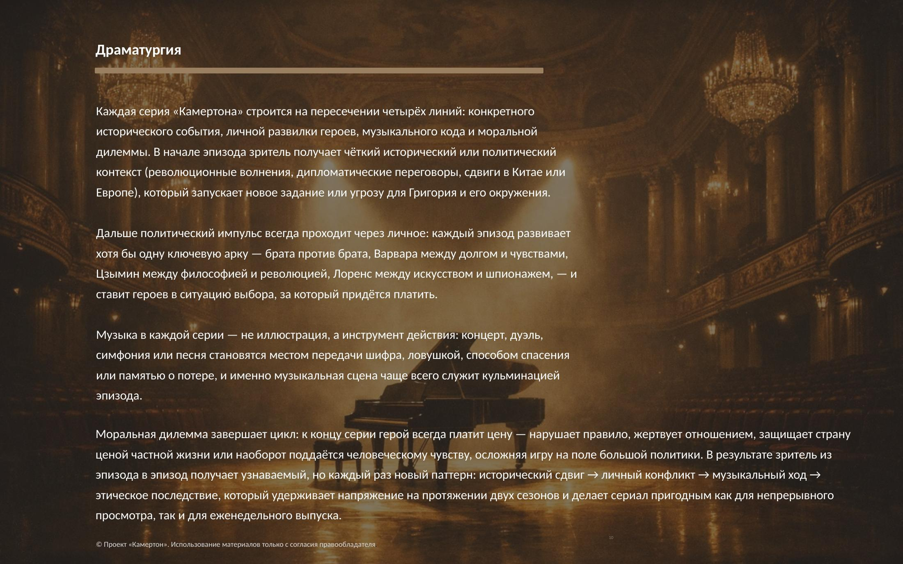
Аудитория и сравнительные аналоги
Аудитория
Целевая аудитория проекта — зрители 25–55 лет, которые смотрят премиальные исторические драмы, шпионские триллеры, престижные международные сериалы и эмоционально насыщенные семейные саги. Ядро аудитории — зритель, которому важны атмосфера, интеллект, историческая фактура, сильные персонажи и многослойная интрига, а не только событийность.
С точки зрения рынков проект имеет потенциал для России, Китая, Европы и Северной Америки, особенно в сегменте аудитории, открытой к неанглоязычным премиальным драмам. Для международной платформы это может быть упаковано как высококлассная историческая шпионская драма с кросс-культурной привлекательностью.
Сравнительные аналоги
Сериал находится на пересечении исторической шпионской драмы, престижной семейной саги и музыкального характерного триллера.
Визуально и тонально проект опирается на атмосферную изысканность, мягкий контровой свет, чувственную пластику кадра и интеллектуальную драматургию. По эстетике, свету и визуальному ряду — Peaky Blinders (2013–2022, реж. Steven Knight, BBC / Caryn Mandabach Productions), по семейной теме и атмосфере. По драматургии — The Queen's Gambit (2020, реж. Scott Frank, Netflix) и Bridge of Spies (2015, реж. Steven Spielberg, DreamWorks / Amblin Entertainment). Из китайского контекста: The Disguiser / 伪装者 (2015, реж. Li Xue, Daylight Entertainment / Shandong Film & TV Group, в гл. роли Ху Гэ) — исторический шпионский триллер с семейным центром тяжести и историей Шанхая в период оккупации; Blossoms Shanghai / 繁花 (2023–2024, реж. Wong Kar-wai, Shanghai Film Group / Tencent Video, в гл. роли Ху Гэ) — первый сериал Вонга Кар-Вая, задающий визуальный и эмоциональный стандарт для русско-китайской оси «Камертона».
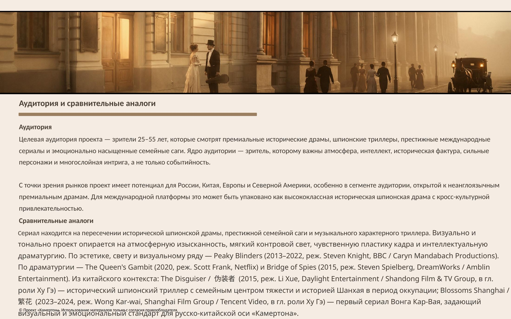
Команда и статус разработки
Статус разработки
Проект находится на стадии сценарной разработки и расширения пакета. На сегодня сформирована драматургическая основа двух сезонов, разработаны психологические портреты ключевых персонажей, прописана система музыкального шифра, лежащего в основе шпионской интриги.
Для достижения максимальной исторической и музыкальной достоверности проект изначально ориентирован на сотрудничество с профильными культурными институциями. Именно поэтому ведутся переговоры о формах взаимодействия с Фондом «Русское исполнительское искусство» и Институтом имени М.М. Ипполитова-Иванова — как с естественными хранителями памяти и наследия Маэстро. Мы открыты к любой модели участия, которую эти институции сочтут для себя органичной: от экспертных консультаций до официального партнёрства.
На следующем этапе ключевыми задачами являются:
- завершение пакета пилотной серии и сценарной библии;
- формирование продюсерского контура и привлечение режиссёра;
- фиксация консультантов по исторической и музыкальной части;
- развитие международной рамки для российско-китайского совместного производства.
Команда и партнёры
Автор идеи / креативный продюсер: Каннингем Анна Грейс
Режиссёр: обсуждается
Сценарий: в разработке
Культурные партнёры (в стадии обсуждения):
- Фонд «Русское исполнительское искусство»
- Институт имени М.М. Ипполитова-Иванова
- Потенциальный китайский производственный партнёр: обсуждается
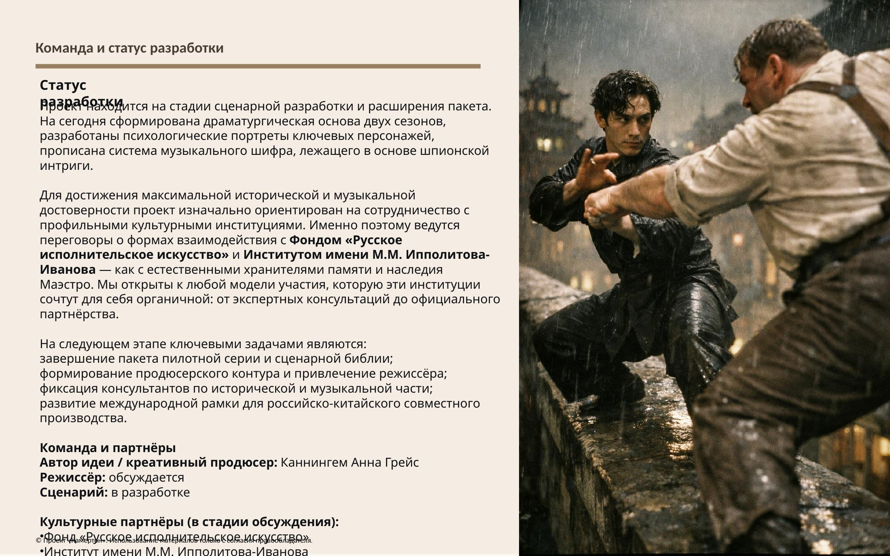
Бюджет и финансирование
Ориентировочный бюджетный диапазон: 10–15 млн долларов США за 24 серии при условии дальнейшего пакетирования, оценки производственного дизайна, структуры совместного производства и моделирования затрат по конкретным территориям.
Потенциальная финансовая модель
- совместное производство Россия–Китай;
- частные инвестиции;
- предварительная продажа;
- культурные фонды и институциональная поддержка;
- выборочные брендовые партнёрства, если они не нарушают историческую органику проекта.
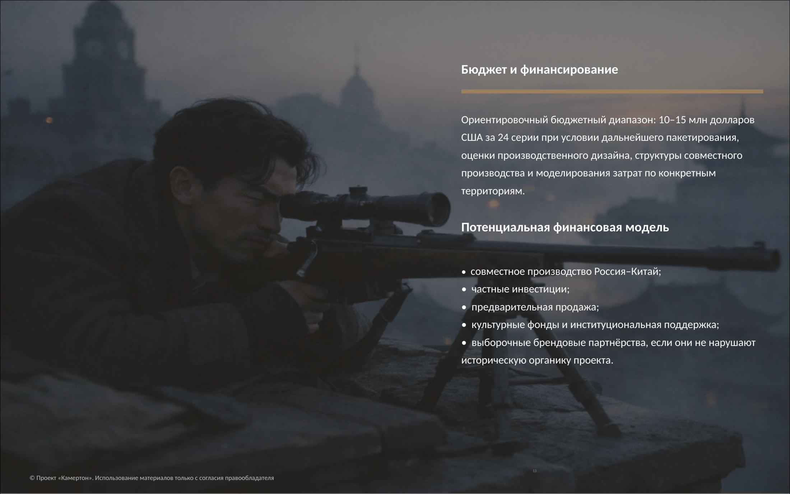
Дистрибуция и стратегия
Дистрибуционная цель: премиальный международный стриминговый сервис, крупные региональные платформы и рыночное освещение через фестивали.
Почему сейчас: Сегодня международный рынок особенно открыт к неанглоязычным премиальным драмам, историческим сериалам и кросс-культурным историям с высокой идентичностью, если у них есть ясный крючок и производственная ценность. «Камертон» соответствует этой логике, потому что предлагает не просто историческую реконструкцию, а самобытный формат, где музыка, разведка и семейная трагедия соединены в один легко описываемый концепт.
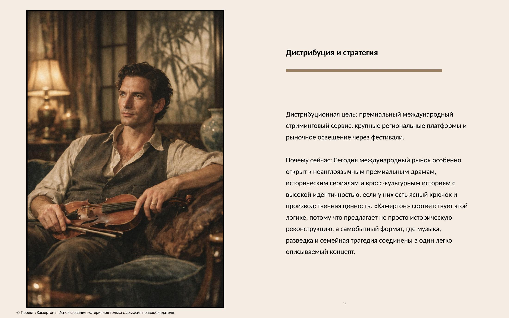
Потребности проекта
Сейчас проект ищет:
Исполнительного продюсера с опытом российско-китайских копродукций для производственного менеджмента, бюджетирования и юридической структуры.
Китайского сопродюсера для совместного производства и локализации (не дистрибьютора).
Консультантов по музыкальной и исторической экспертизе.
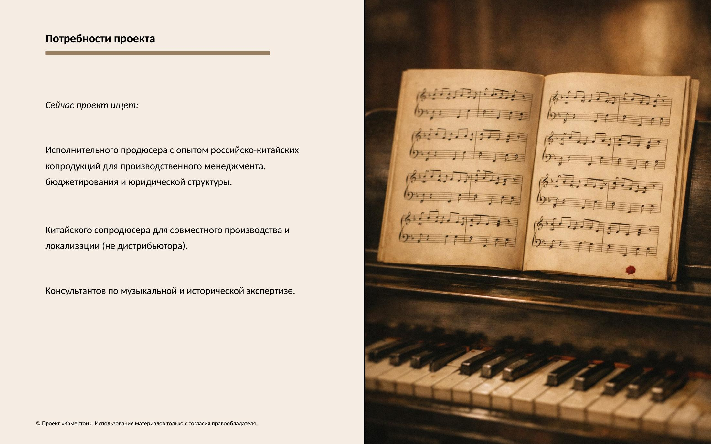
Правовой статус и права на проект
Проект «Камертон» является оригинальным авторским произведением, включающим сюжет, персонажей, мир, композицию сезонов, а также уникальную концепцию музыкального шифра как драматургического инструмента.
Исключительные права на литературную основу, концепцию сериала, разработанные материалы питч-дека, синопсисы сезонов и описание персонажей принадлежат Каннингем Анне Грейс. Любое использование, переработка, развитие, адаптация, экранизация и публичное представление материалов проекта допускается только на основании письменного договора с правообладателем.
Настоящая презентация предоставляется адресно потенциальным партнёрам и инвесторам исключительно с целью ознакомления и не может рассматриваться как публичная оферта или отказ от авторских прав. Передача документа третьим лицам допускается только с согласия правообладателя.
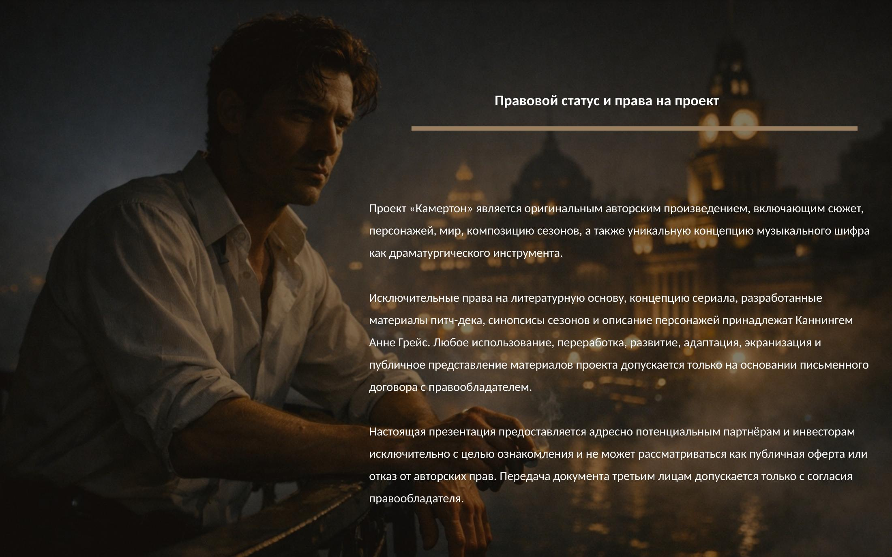